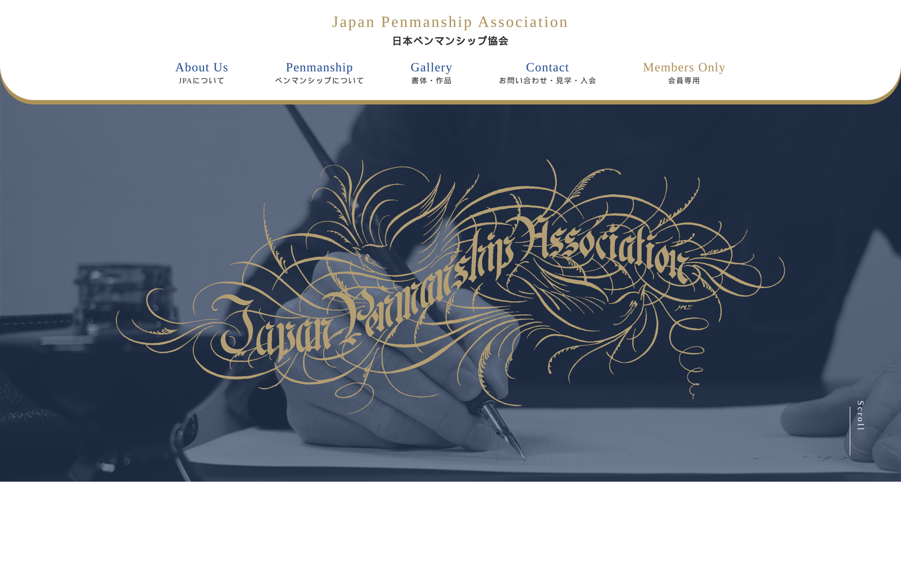
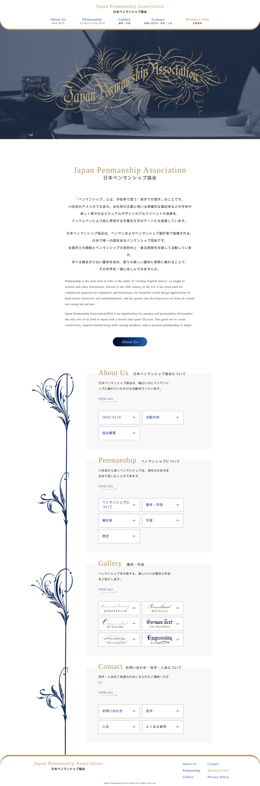
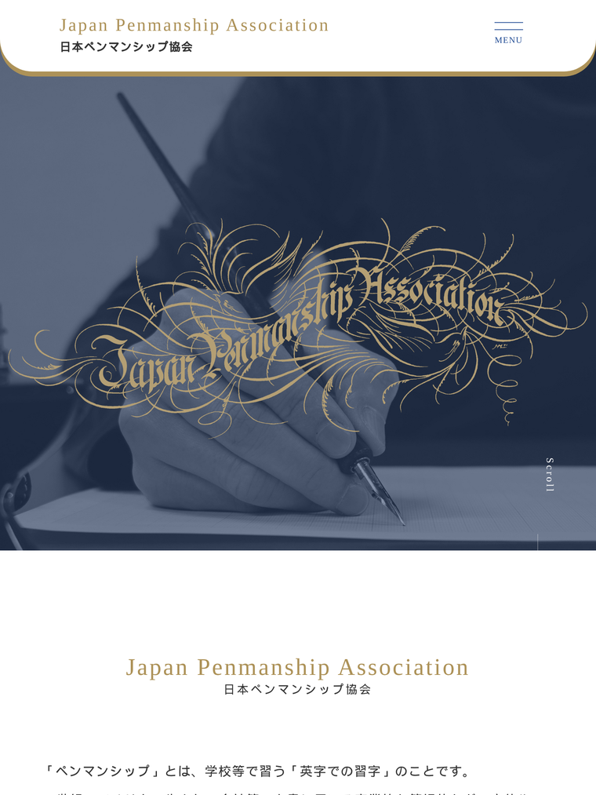
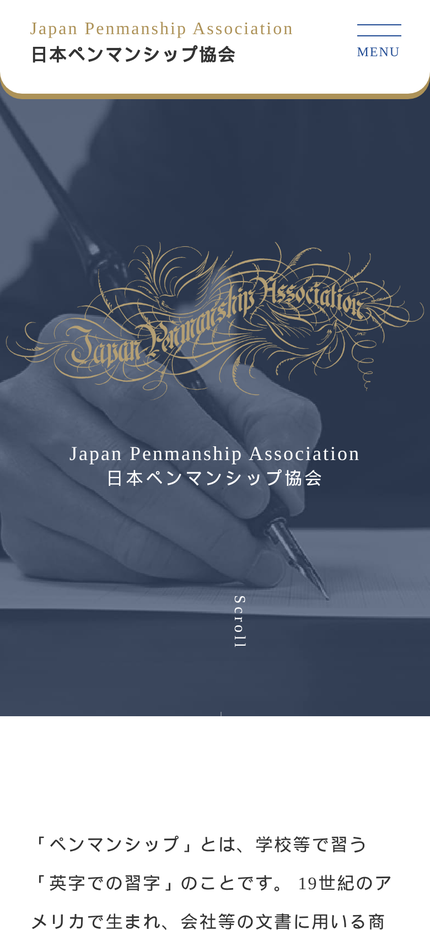

公開・運用中 — Live Production Site
Case Study · Corporate Website · Real Client Work
日本ペンマンシップ協会
公式サイト
英字書法・装飾文字のアート「ペンマンシップ」を普及する協会の公式コーポレートサイト。 課題整理・情報設計・画面設計・デザイン調整・実装・検証までを一人で一貫して担当し、 現在 japanpenmanship.org で公開・運用されています。 「専門性は保ちながら、初めての人にも迷わず伝わる構造」を軸に設計しました。

01 — Overview
プロジェクト概要
日本ペンマンシップ協会は、英字書法・装飾文字のアート「ペンマンシップ」の普及活動を行う団体です。 扱う領域が専門的で、特徴の異なる6書体を紹介する必要があり、 「何の協会で、何が学べて、どう問い合わせればよいか」が初めての訪問者に伝わりにくい、 という情報整理の課題がありました。
そこで本案件では、見た目を作る前に情報の優先順位を決めるところから着手しました。 トップを「目次」と位置づけて4テーマへ分岐させ、専門ページで段階的に深掘りできる導線を設計。 ゴールである「見学・入会（Contact）」へ、どのページからでも到達できる回遊性を確保しました。
全13ページ・画像108点を、共通パーツのテンプレート化と命名ルールの統一で 破綻なく組み上げ、PC・タブレット・スマートフォンの3環境で表示検証まで実施。 公開後は協会側が更新する前提のため、「更新しても崩れにくい構成」で納品しています。
02 — Problem & Solution
課題と、それに対する解決策
挙がった課題ごとに「なぜ問題か」を言語化し、設計・実装で対応した内容を整理しました。
● Problem ／ 課題
● Solution ／ 解決策
01 · 専門用語
前提知識のない訪問者には専門用語が多く離脱されやすい。
→ 段階的提示
「協会とは→何が学べるか→作品→参加方法」の順に情報を段階的に提示。ナビに日本語補足を添えた。
02 · 情報量
特徴の異なる6書体という情報量を、迷わせず比較しやすく見せる必要。
→ 情報設計
トップを目次型にして4テーマへ分岐。Penmanship 配下に6書体ページを整理して配置。
03 · 問い合わせ
見学・入会への導線が弱いと、行動につながりにくい。
→ 複数導線
グローバルナビ・フッター・各セクション末にContact 導線を重ねて配置し、どこからでも到達可能に。
04 · 端末差
PC中心想定でも、スマホでレイアウトを破綻させない必要。
→ レスポンシブ
PCを基準に設計しつつ、スライダー表示枚数を端末別に最適化（PC3→タブ2→SP1）し3環境で検証。
03 — Production Flow
制作フロー
デザインから入らず、課題整理と情報設計を起点にした6工程（合計 約15日）を一人で担当しました。
課題整理
1日
協会の目的・対象・扱う分野を洗い出し、伝える優先順位を定義。
情報設計
2日
サイトマップと導線を設計（全13ページ）。
画面設計
1日
ワイヤーフレームでレイアウトと端末別の崩し方を設計。
デザイン調整
2日
協会の素材・方針を各端末で崩れないUIへ落とし込み。
実装
7日
共通パーツを部品化し、命名規則を統一してHTML/CSS/JSで構築。
検証
2日
ブラウザ・端末で表示と不具合を確認し、原因まで特定して修正。
04 — Highlights
工夫した点
01
専門性を保つ情報設計
多分野を1ページに詰め込まず、トップを「目次」と位置づけて4テーマへ分岐。専門知識がなくても全体像をひと目で把握でき、入り口を見つけられる構造にしました。
02
端末別のレスポンシブ設計
作品スライダーは slick の responsive 設定で表示枚数を出し分け（PC3 / タブレット2 / SP1）。画面設計で決めた方針を、そのまま実装に落とし込みました。
03
共通パーツのテンプレート化
ヘッダー・フッター等を共通部品として切り出し、reset.css ＋ common.css に集約。13ページで見た目を統一し、修正を一箇所で済ませられる状態にしました。
04
スクロール連動のUI実装
スクロール位置を監視し、要素が画面に入ったら fadeIn を付与するJSを実装。装飾過多にならない範囲で、閲覧のリズムと上質感を補強しました。
05 — Tech Stack
使用技術
協会側が更新する前提のため、運用・保守のしやすさを優先したシンプルな技術選定です。
- HTML5 セマンティック構造
- CSS3 reset + common / BEMライク命名
- JavaScript スクロール連動UI
- jQuery DOM操作・イベント
- slick 作品スライダー
- FONTPLUS / Google Fonts Web書体
- Git / GitHub バージョン管理
06 — Responsive
3環境での表示検証
PC・タブレット・スマートフォンの実表示。いずれも実際の公開サイトのスクリーンショットです。



07 — Report Digest
制作レポートダイジェスト
企画から検証までをまとめた全21ページの制作レポート（企画書）の要点です。 各工程の詳細・図版・実装コード・Lighthouse 計測値などは、PDF でご確認いただけます。
STEP ①P05
課題
「誰に何を届けるサイトか」を整理。認知の低い専門分野で、見学・入会へつなげる課題を定義。
- 専門用語が多く離脱されやすい
- 6書体という情報量の多さ
- 見学・入会への導線確保
STEP ②P07–09
情報設計
トップを「目次」に。4テーマへカード型に分岐させ、理解が進む順に情報を整理。
- About / Penmanship / Gallery / Contact
- Penmanship 配下に6書体
- 会員エリアを分離し動線を単純化
STEP ③P10–11
画面設計
情報設計の結論をレイアウトへ反映。PC基準に Tablet・SP の崩し方まで設計。
- 目次型トップ（FV直下に4カード）
- 複数導線で Contact へ到達
- スライダー PC3→タブ2→SP1
STEP ⑤P13–15
実装
保守・運用を前提に技術選定。共通設計で13ページの統一と修正の一元化を実現。
- HTML5 セマンティック
- CSS：reset + common / BEMライク
- JS / jQuery（slick・スクロール連動）
STEP ⑥P17–18
検証
Chrome / Safari / SP / タブレットで確認し、不具合を原因まで特定して修正。
- iPhone Safari の 100vh 見切れを修正
- Gallery 画像のはみ出しを解消
- Lighthouse 92 / 96 / 100 / 100
PROPOSALP20
改善提案
公開後も継続したい点を「課題→施策→効果」で整理し、優先度 A〜C を設定。
- A：画像のWebP化・遅延読み込み
- B：IntersectionObserver へ置換
- C：ARIA整備 / フォーム入力FB
上記はダイジェストです。各工程の図版・根拠・実装コードは 制作レポート（PDF・全21ページ） に掲載しています。
08 — Deliverables
成果物リンク
For Reviewers — 次のステップ
制作プロセスを、企画書でさらに詳しく。
このページのダイジェストの先に、各工程の図版・実装コード・検証結果・改善提案をまとめた 全21ページの制作レポートがあります。コードはGitHubで公開しています。
① 作品を見る→② ケーススタディ（本ページ）→③ 企画書→④ GitHub